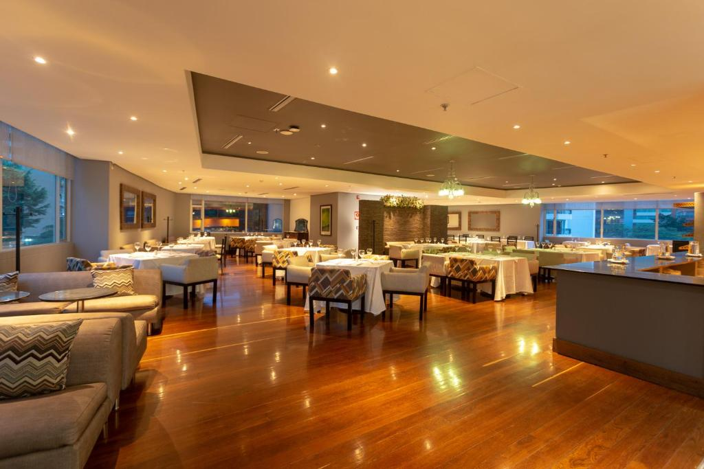
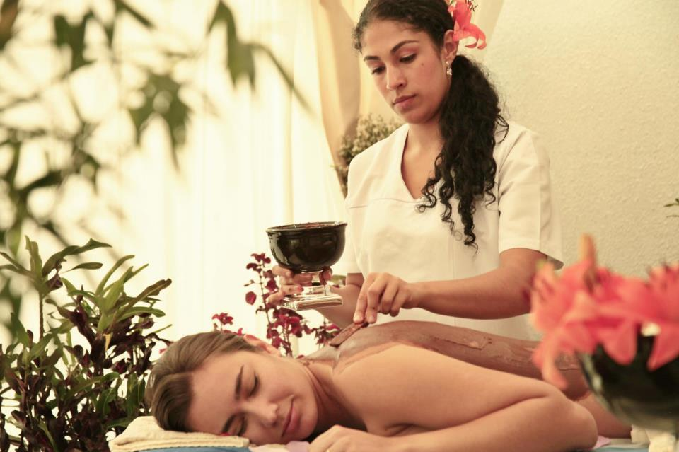

Servicios
| Restaurante  | Todos los días se sirve un desayuno buffet. El restaurante Spezia propone una amplia variedad de vinos, platos internacionales y de estilo vanguardista. El bar del vestíbulo sirve bebidas de calidad en la terraza. Se proporciona servicio de habitaciones las 24 horas. |
| Centro de Negocios | Para su comodidad, el Hotel San Fernando Plaza Medellín, cuenta con un Centros de Negocios dotado con equipos de cómputo de alta tecnología, situado en el lobby principal Nuestro personal amable y profesional está dispuesto a ayudarle con todas sus necesidades de negocio. |
| Gimnasio y Spa  | Ofrece a nuestros huéspedes excelentes equipos multifuncionales, de spinning, bandas trotadoras y elípticas. Un espacio dirigido y completamente adecuado para ejercitarse, relajarse y fortalecer su cuerpo y mente. El spa está equipado con baño turco, sauna y servicio de masajes. También hay un gimnasio y tumbonas junto a la piscina. El aparcamiento está disponible por un suplemento. |
Transporte |
La recepción está abierta las 24 horas y ofrece un servicio de enlace con el aeropuerto Olaya Herrera, situado a 20 minutos en coche. El Hotel San Fernando Plaza se sitúa a 30 minutos en coche de la plaza de Botero. Nuestros clientes dicen que esta parte de Medellín es su favorita, según los comentarios independientes. |